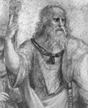

Platon’un (MÖ 429-347) gerçek ismi Aristokles’dir. Atina’da politik güce sahip zengin bir ailenin çocuğu olarak dünyaya geldi. Platon ismi, geniş omuzlarından esinlenilerek güreş öğretmeni tarafından kendisine verilmiştir.

“Platos” kelimesi Yunanca geniş anlamına gelmektedir. Bu isim filozofun felsefe tarihindeki konumuna da son derece uygun düşmektedir. Her ne kadar günümüzde politika alanında yazdıkları daha fazla biliniyor olsa da, Atinalı yazarın eserleri şiir, cinsellik ve matematik de dahil olmak üzere çok çeşitli konularla ilgilidir.
Platon gençliğinde son derece ayrıcalıklı bir eğitim aldı. Filozof Sokrat’ın (MÖ 470-399) öğrencisi oldu. Öğretmeninin yargılanıp idam edilmesi onda şok etkisi yarattı. Sokrat’ın pek çok diğer öğrencisi gibi Platon da onun ölümünün ardından şehri terk etti. İtalya ve Sicilya’ya gitti.
Kırk yaşındayken geri döndü ve ünlü akademisini açtı. Genç Atinalılar için bir felsefe okulu olmasını planladığı “Akademi” Batı dünyasında kendi türünün ilk örneği oldu. Yunanistan’ın her yerinden öğrenciler bu okula geldiler. Bunların arasında Platon’un yanında çalışmak için MÖ 367 yılında Atina’ya gelen Aristo da vardı.
Plato’nun pek çok çalışması günümüze kadar ulaşmıştır. Yazdıklarının büyük bölümü diyaloglar şeklindedir. Örnek vermek gerekirse en bilinen çalışması olan Republic (Devlet / MÖ 360), Sokrat ve diğer Yunanlılar arasında geçen kurgusal sohbetlerden oluşmaktadır. Platon diyaloglardan hükümet yapısı, adalet ve toplumda filozofların rolü konusundaki fikirlerini genel hatlarıyla ortaya koymak için yararlanmıştır.
Devlet kitabında Platon’un ünlü “Mağara Alegorisi” de bulunmaktadır. Hikaye, ömürleri boyunca bir mağarada zincirlenmiş olarak bulunan insanlarla ilgilidir. Bunlar güneşi hiç görmemişlerdir. Gördükleri tek şey birkaç nesnenin mağara duvarına düşen gölgeleridir. Platon’a göre mağaradaki insanlar gördükleri gölgelerin gerçeğin ta kendisi olduğuna inanacaklardır. Ama içlerinden biri güneşi görme imkanı bulursa gerçek dünyanın farkına varacak ve diğerlerini aydınlatmaya çalışacaktır. Platon bu öyküyü filozofun toplumdaki öğretici rolünü anlatmak için bir alegori olarak kullanmıştır. Filozof mağaradan kurtulan ve metafiziği, yani gerçekliğin temel doğasını anlamayı başaran kişidir.
Platon Okulu, kurucusunun ölümünden yüzlerce yıl sonra dahi Atina’da varlığını koruyabilmiştir. Platon’un düşünceleri pek çok çağdaş siyaset kuramına ilham vermiştir.
Ek Bilgiler
1- “Akademi” ve “akademik” sözcükleri Platon’un Atina’daki “Akademi”sinden türetilmiştir. Platon’un açtığı okula “Akademi” isminin verilme sebebi ise, Yunan kahramanı Academus’a adanan bahçelerde inşa edilmesidir.
2- Platon’un felsefe okulu bin yıla yakın bir süre açık kalmıştır. 529 yılında Bizans İmparatoru tarafından Hıristiyanlığın altını oyduğu gerekçesiyle kapatılmıştır.
3- Platon’un ailesinin kökeninin, Yunan deniz tanrısı Poseidon’a uzandığına dair çeşitli efsaneler vardır.